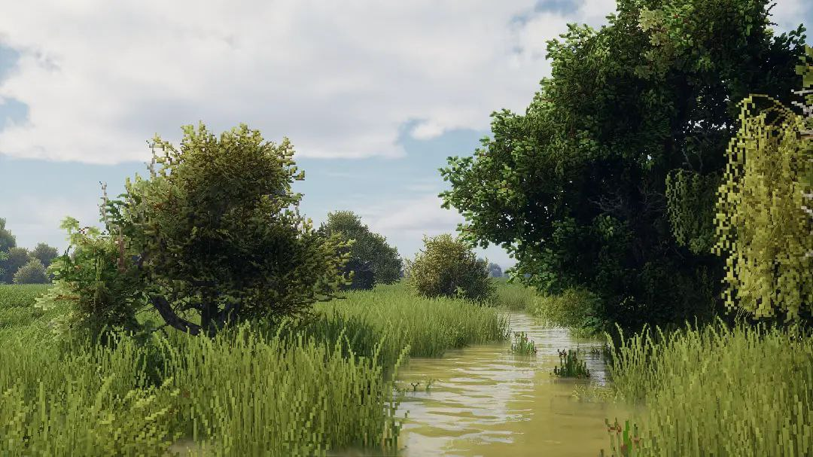

Новости проекта
Завершена разработка базового функционала
15 марта 2025

Мы рады сообщить о завершении разработки основных функций приложения BindWord XP! Теперь пользователи могут анализировать текст, используя базовые алгоритмы обработки естественного языка.
Началось тестирование кроссплатформенности
8 марта 2025
Команда разработчиков приступила к тестированию приложения на различных операционных системах: Windows, macOS и Linux. Мы стремимся обеспечить стабильную работу BindWord XP на всех платформах.
Представлен прототип графического интерфейса
1 марта 2025
Встречайте видео-презентацию прототипа графического интерфейса BindWord XP! Вы можете увидеть, как будет выглядеть приложение и какие возможности оно предоставит пользователям.